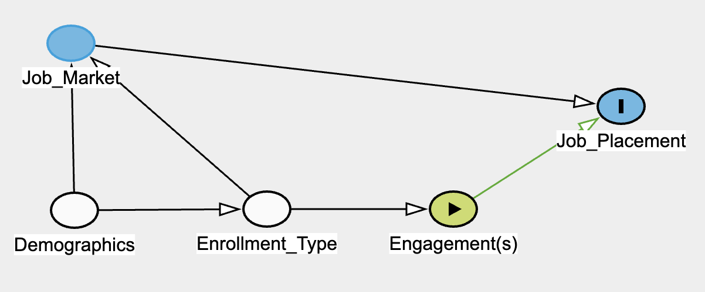
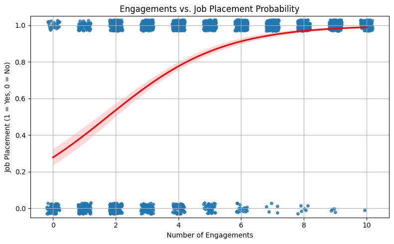
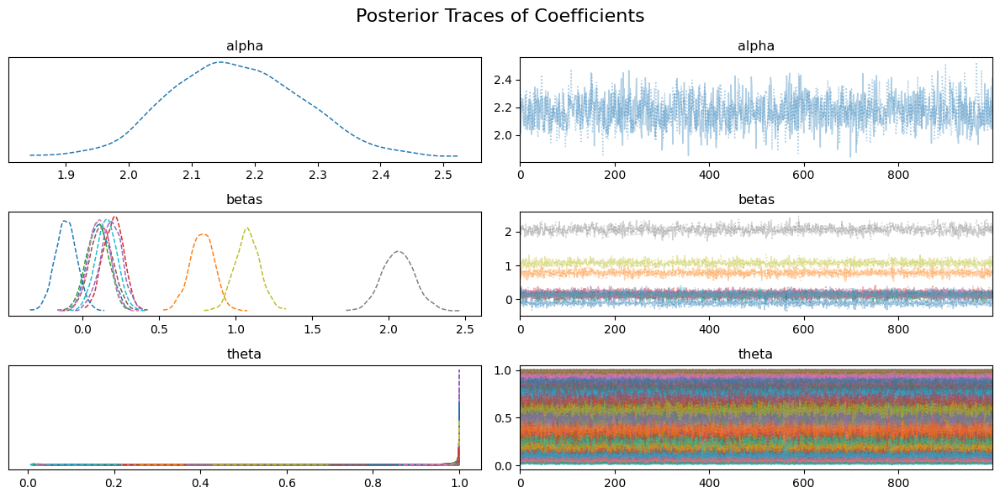

The Dean’s Office of the Jon M. Huntsman School of Business, utlizies Salesforce to collect recruitment, enrollment, and post-graduation data on students. I seek to understand how a student’s involvement with extracurricular activities, particularly corporate partner engagements, impact workforce placement and starting salary. With this data, I aim to understand the efficacy of corporate partner engagements as it relates to successful student outcomes (i.e., job placement and starting salary post-graduation)
Data Context: The Dean’s Office includes the External Relations Team, which works with alumni and corporate partners to coordinate engagements and develop hiring pipelines. The External Relations Team aims to create opportunities for students to connect with industry professionals, with the intent to enhance students’ chances for job placement and higher starting salaries.
Data Question: The External Relations Team wants to understand whether attending alumni and corporate partner engagements causes better job placement and higher starting salaries for students. To answer this question, a causal inference analysis will be utilized to identify if there’s a cause-and-effect relationship between engagement participation and positive post-graduation outcomes.
Data Sources: The Dean’s Office collects event registration and check-in data inconsistently and uses a non-required, one-time survey to gather job placement and salary data from students after graduation. Since not all students respond to the survey, LinkedIn is used to verify if a student has found a job after graduation and if so, Glassdoor is used to estimate their starting salary based on experience, job title, and job location.
Data Challenges: The External Relations Team faces several data challenges in determining whether alumni and corporate partner engagements truly influence student outcomes. Registration for and attendance at engagement events isn’t always tracked consistently, which leaves gaps in understanding how often and how deeply students participate.
The optional graduation survey can skew results due to response bias, and, for non-respondents, the use of LinkedIn and Glassdoor introduces uncertainty since LinkedIn profiles may not be current, and Glassdoor salary estimates aren’t always precise.
Finally, establishing causation rather than simple correlation requires collecting and controlling for variables like Demographics, Enrollment_Type, and Job_Market, ensuring that any observed effect on job placement or starting salary actually stems from engagement rather than preexisting differences among students.
Data Solutions: One approach might be to standardize how attendance is recorded, requiring consistent registration and check-in to create a more accurate measure of student participation.
Offering small incentives for the graduation survey or making it a graduation checkpoint could improve response rates and reduce bias. For students who do not respond, the External Relations Team might consider documenting a confidence level for any inferred salary data from LinkedIn or Glassdoor, clarifying that these numbers are estimates.
To address the challenge of proving causation, collecting additional information—such as Demographic, Enrollment_Type, and Job_Market data—would allow for stronger statistical methods, such as causal estimation and a matching strategy, that control for confounding variables among students.
Data Impact: If the analysis shows that engagement events positively influence students’ job prospects and salaries, the External Relations Team may decide to prioritize these activities more and develop student-facing messaging highlighting the positive impacts of participation.
However, if no significant relationship is found, the External Relations Team could adjust overall strategy and shift focus to other efforts that have a more significant impact on student outcomes.
Data Presentation: To ensure the findings are both accessible and actionable, an interactive dashboard could be developed that showcases key metrics, such as event attendance trends, job placement rates, and salary distributions.
Simplifying technical analyses—like propensity score matching—into clear visuals or brief summaries would help non-technical stakeholders understand how engagement impacts student outcomes.
Sharing statistical findings in student-facing messaging could further underscore the real-world benefits of attending events, while concise executive summaries would enable leadership to quickly grasp the main conclusions and decide on resource allocation.

Causal Effect Identifcation
*Adjustment: Total Effect
*Exposure: Engagement(s)
*Outcome: Job_Placement
*Adjusted: Demographics & Enrollment_Type
Correctly adjusted ✔️
*Minimal sufficient adjustment sets containing Demographics, Enrollment_Type for estimating the total effect of Engagement(s) on Job_Placement: Demographics, Enrollment_Type
Testable Implications
The model implies the following conditional independences:
*Demographics ⊥ Engagement(s) | Enrollment_Type
*Demographics ⊥ Job_Placement | Engagement(s), Job_Market
*Demographics ⊥ Job_Placement | Enrollment_Type, Job_Market
*Enrollment_Type ⊥ Job_Placement | Engagement(s), Job_Market
*Engagement(s) ⊥ Job_Market | Enrollment_Type
Summary
*Exposure: Engagement(s)
*Outcome: Job_Placement
*Covariates: 3
*Causal Paths: 1

Assumptions & Research
*Race_White: Majority (85%)
*Age: 21 to 27
*Gender_Male: Majority (60%)
*Undergraduate: Majority (75%)
*Full-Time: Majority (75%)
*Program_Label: 10-Program Split
*GPA: 3.50 Average
*Engagements: 1 to 10
*Internships: 1 to 3
*Industry_Label: 11-Industry Split
*From_Utah: Majority (60%)
*Mean: 1.08
*95% HDI (Credible Interval): [0.93, 1.23]
*Interpretation: Holding all other variables constant, each additional engagement increases the log-odds of job placement by approximately 1.08

If an incentive was being considered for implementation, using conjoint could help to develop program parameters that actually promote behavior based on user interests
If a policy (i.e., attendance and/or incentive) were implemented, this kind of analysis could be explored
The matching strategy would be relevant in this context to isolate the causal effect of student engagement on job placement by comparing students with similar backgrounds but different engagement levels, mimicking a randomized experiment
*Estimated Causal Effect: 0.316 (High - Low Engagement)
*Interpretation: On average, individuals with high engagement were 31.6 percentage points more likely to be placed in a job than matched individuals with low engagement
There are currently no cutoffs in place (i.e., If a student attends five events, they get access to extra career prep support). However, if there was, this would be a type of analysis that could be used to measure the effect